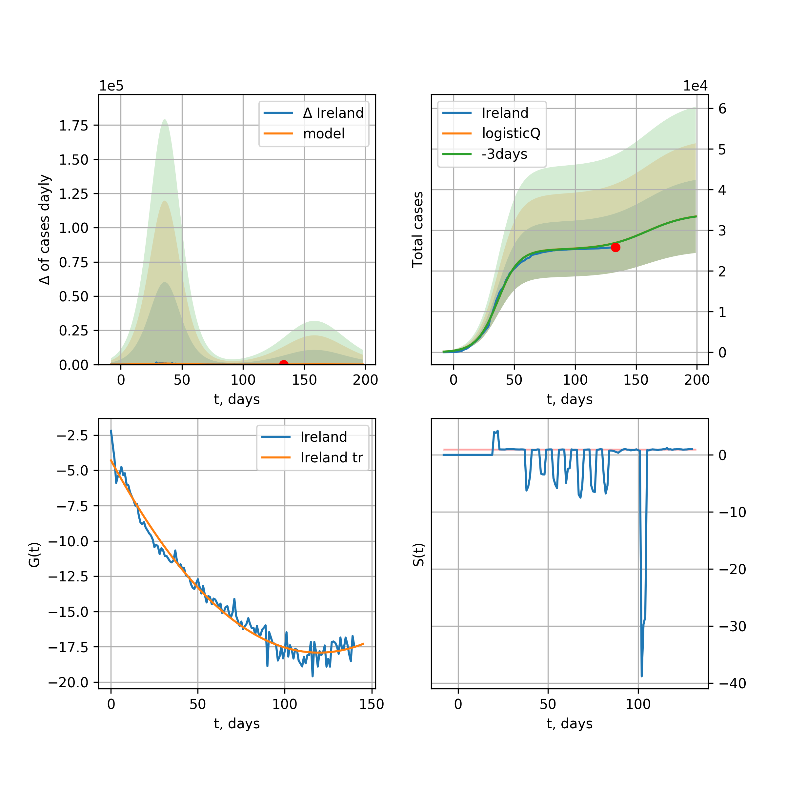

Multi-logistic model of COVID-19 dynamics
Model, code, results
Project maintained by algmaknick Hosted on GitHub Pages — Theme by mattgraham
World

World data at: 2020-06-01
+3 day model MAPE: 0.021634
model: bi-Richards
coeffs: [ 8.77059116e+06 3.13600213e+00 -6.56930754e+01 9.38542643e-03]
S.Korea scenario coeffs: [0.36242246, 2.56241634, 1.84890887, 0.13324732]
rational stdev: 0.253073
forecast at the end of period: +565 days
deltaDaycases: 5945
total cases: 11625036 ± 2941984
total death: 688871 ± 523004
bi-Richards approximation splitting point: 55
trend coefficient of determination: 0.356310
intercept: -1.897803
slope: -0.041434
trend coefficient of determination: 0.900819
intercept: -0.896426
slope: -0.027868
European Union
European Union data at: 2020-06-01
+3 day model MAPE: 0.007629
model: logisticQ
coeffs: [ 1.15405586e+06 4.36775392e-07 3.53432860e+01 -2.35227145e+05]
S.Korea scenario coeffs: [0.35416971, 0.02606324, 4.35859408, 19.30413219]
rational stdev: 0.342438
forecast at the end of period: +145 days
deltaDaycases: 320
total cases: 1556658 ± 533058
total death: 163337 ± 167798
trend coefficient of determination: 0.988623
intercept_: -7.851303880352763
coeffs_: [ 0. -0.26526047 0.00151259]
Brazil

Brazil data at: 2020-06-01
+3 day model MAPE: 0.022719
model: logisticQ
coeffs: [ 1.27096711e+06 6.57773258e-06 8.74601345e+01 -1.10766523e+04]
S.Korea scenario coeffs: [0.35416971, 0.02606324, 4.35859408, 19.30413219]
rational stdev: 0.390590
forecast at the end of period: +425 days
deltaDaycases: 156
total cases: 1716880 ± 670596
total death: 97440 ± 114177
trend coefficient of determination: 0.897123
intercept_: -4.432949467432582
coeffs_: [ 0. -0.25717089 0.0014629 ]

Brazil data at: 2020-06-01
+3 day model MAPE: 0.004109
model: Richards
coeffs: [1.21278839e+07 1.82830096e-01 1.90327488e+01 9.60379032e-02]
S.Korea scenario coeffs: [0.36242246, 2.56241634, 1.84890887, 0.13324732]
rational stdev: 0.339045
forecast at the end of period: +1055 days
deltaDaycases: 2550
total cases: 16075038 ± 5450162
total death: 912327 ± 927959
trend coefficient of determination: 0.207451
intercept: -2.556955
slope: -0.022305
Russia

Russia data at: 2020-06-01
+3 day model MAPE: 0.012514
model: Richards
coeffs: [5.58970892e+05 2.41681223e-01 1.92961271e+01 2.34350547e-01]
S.Korea scenario coeffs: [0.36242246, 2.56241634, 1.84890887, 0.13324732]
rational stdev: 0.088042
forecast at the end of period: +215 days
deltaDaycases: 837
total cases: 711638 ± 62654
total death: 8327 ± 2199
trend coefficient of determination: 0.986306
intercept: -3.065107
slope: -0.055766
USA

USA data at: 2020-06-01
+3 day model MAPE: 0.012013
model: Richards
coeffs: [ 2.14321567e+06 4.36534192e+00 -6.77933717e+01 9.65643107e-03]
S.Korea scenario coeffs: [0.36242246, 2.56241634, 1.84890887, 0.13324732]
rational stdev: 0.356647
forecast at the end of period: +467 days
deltaDaycases: 494
total cases: 2885032 ± 1028939
total death: 165910 ± 177514
trend coefficient of determination: 0.952361
intercept: -1.085469
slope: -0.042732
Spain

Spain data at: 2020-06-01
+3 day model MAPE: 0.001576
model: Richards
coeffs: [ 2.92623031e+05 8.19006343e+00 -5.10999338e+01 7.47571626e-03]
S.Korea scenario coeffs: [0.36242246, 2.56241634, 1.84890887, 0.13324732]
rational stdev: 0.241957
forecast at the end of period: +285 days
deltaDaycases: 120
total cases: 392778 ± 95035
total death: 37161 ± 26974
trend coefficient of determination: 0.955401
intercept: -0.697601
slope: -0.061420
Italy

Italy data at: 2020-06-01
+3 day model MAPE: 0.001015
model: Richards
coeffs: [ 2.36845285e+05 5.90037535e+00 -5.11541620e+01 1.00909345e-02]
S.Korea scenario coeffs: [0.36242246, 2.56241634, 1.84890887, 0.13324732]
rational stdev: 0.072286
forecast at the end of period: +257 days
deltaDaycases: 147
total cases: 315136 ± 22780
total death: 45237 ± 9810
trend coefficient of determination: 0.985519
intercept: -1.087221
slope: -0.057097
United Kingdom

United Kingdom data at: 2020-06-01
+3 day model MAPE: 0.001410
model: Richards
coeffs: [ 3.15489528e+05 4.02594185e+00 -6.20693270e+01 1.16122781e-02]
S.Korea scenario coeffs: [0.36242246, 2.56241634, 1.84890887, 0.13324732]
rational stdev: 0.136239
forecast at the end of period: +355 days
deltaDaycases: 175
total cases: 418287 ± 56987
total death: 59102 ± 24156
trend coefficient of determination: 0.963461
intercept: -1.375293
slope: -0.045790
France

France data at: 2020-06-01
+3 day model MAPE: 0.005046
model: Richards
coeffs: [1.83375038e+05 6.60772948e-01 9.70586032e+00 1.35680821e-01]
S.Korea scenario coeffs: [0.36242246, 2.56241634, 1.84890887, 0.13324732]
rational stdev: 3.955142
forecast at the end of period: +117 days
deltaDaycases: 286
total cases: 239766 ± 948311
total death: 36535 ± 433503
trend coefficient of determination: 0.876443
intercept: -1.703474
slope: -0.069228
Germany

Germany data at: 2020-06-01
+3 day model MAPE: 0.003748
model: Richards
coeffs: [ 1.80546759e+05 1.09187041e+01 -4.54691484e+01 7.22347793e-03]
S.Korea scenario coeffs: [0.36242246, 2.56241634, 1.84890887, 0.13324732]
rational stdev: 0.318204
forecast at the end of period: +187 days
deltaDaycases: 133
total cases: 240864 ± 76643
total death: 11295 ± 10782
trend coefficient of determination: 0.955812
intercept: -1.251360
slope: -0.063735
Turkey

Turkey data at: 2020-06-01
+3 day model MAPE: 0.007411
model: Richards
coeffs: [ 1.66129626e+05 7.42492976e+00 -4.20327362e+01 9.22600116e-03]
S.Korea scenario coeffs: [0.36242246, 2.56241634, 1.84890887, 0.13324732]
rational stdev: 0.264873
forecast at the end of period: +196 days
deltaDaycases: 262
total cases: 213805 ± 56631
total death: 5920 ± 4704
trend coefficient of determination: 0.812351
intercept: -1.016224
slope: -0.055982
Iran

Iran data at: 2020-06-01
+3 day model MAPE: 0.013613
model: bi-Richards
coeffs: [9.27385065e+04 5.21401352e+00 1.74478907e+01 1.21774382e-02]
S.Korea scenario coeffs: [0.36242246, 2.56241634, 1.84890887, 0.13324732]
rational stdev: 0.294258
forecast at the end of period: +299 days
deltaDaycases: 139
total cases: 221601 ± 65208
total death: 11303 ± 9978
bi-Richards approximation splitting point: 75
trend coefficient of determination: 0.949245
intercept: -0.919085
slope: -0.055207
trend coefficient of determination: 0.114275
intercept: -4.735315
slope: 0.005002
Canada

Canada data at: 2020-06-01
+3 day model MAPE: 0.002678
model: Richards
coeffs: [ 1.09432687e+05 3.04677972e+00 -6.94254354e+01 1.39532293e-02]
S.Korea scenario coeffs: [0.36242246, 2.56241634, 1.84890887, 0.13324732]
rational stdev: 0.176140
forecast at the end of period: +420 days
deltaDaycases: 36
total cases: 146522 ± 25808
total death: 11705 ± 6185
trend coefficient of determination: 0.965636
intercept: -1.586688
slope: -0.044246
Belgium

Belgium data at: 2020-06-01
+3 day model MAPE: 0.002344
model: Richards
coeffs: [ 5.92683843e+04 5.32319486e+00 -4.07201913e+01 1.27281670e-02]
S.Korea scenario coeffs: [0.36242246, 2.56241634, 1.84890887, 0.13324732]
rational stdev: 0.861296
forecast at the end of period: +187 days
deltaDaycases: 88
total cases: 76513 ± 65900
total death: 12403 ± 32047
trend coefficient of determination: 0.950516
intercept: -1.225049
slope: -0.058218
Peru

Peru data at: 2020-06-01
+3 day model MAPE: 0.044549
model: Richards
coeffs: [ 6.66121110e+05 1.07218506e+00 -7.01058241e+01 2.18572731e-02]
S.Korea scenario coeffs: [0.36242246, 2.56241634, 1.84890887, 0.13324732]
rational stdev: 0.296187
forecast at the end of period: +775 days
deltaDaycases: 224
total cases: 877655 ± 259950
total death: 23918 ± 21252
trend coefficient of determination: 0.657095
intercept: -1.567059
slope: -0.026059
Netherlands

Netherlands data at: 2020-06-01
+3 day model MAPE: 0.003322
model: Richards
coeffs: [ 4.68168012e+04 8.06614703e-01 -7.41400357e+00 8.58584503e-02]
S.Korea scenario coeffs: [0.36242246, 2.56241634, 1.84890887, 0.13324732]
rational stdev: 0.102662
forecast at the end of period: +187 days
deltaDaycases: 37
total cases: 62143 ± 6379
total death: 7960 ± 2451
trend coefficient of determination: 0.969037
intercept: -1.388872
slope: -0.063677
India

India data at: 2020-06-01
+3 day model MAPE: 0.007320
model: Richards
coeffs: [ 3.35635960e+06 3.82393134e-01 -4.50353341e+01 4.17495029e-02]
S.Korea scenario coeffs: [0.36242246, 2.56241634, 1.84890887, 0.13324732]
rational stdev: 0.374882
forecast at the end of period: +1055 days
deltaDaycases: 1206
total cases: 4324456 ± 1621160
total death: 122047 ± 137259
trend coefficient of determination: 0.598102
intercept: -1.816895
slope: -0.021568
Switzerland

Switzerland data at: 2020-06-01
+3 day model MAPE: 0.001762
model: logisticQ
coeffs: [ 3.01834201e+04 6.79799841e-07 2.60722054e+01 -2.09576614e+05]
S.Korea scenario coeffs: [0.35416971, 0.02606324, 4.35859408, 19.30413219]
rational stdev: 0.331861
forecast at the end of period: +75 days
deltaDaycases: 20
total cases: 40591 ± 13470
total death: 2524 ± 2512
trend coefficient of determination: 0.982403
intercept_: -4.038485492486174
coeffs_: [ 0. -0.2958451 0.00161814]
Ecuador

Ecuador data at: 2020-05-31
+3 day model MAPE: 0.013516
model: Richards
coeffs: [ 5.68633778e+04 2.04547114e+00 -6.65952558e+01 1.67073911e-02]
S.Korea scenario coeffs: [0.36242246, 2.56241634, 1.84890887, 0.13324732]
rational stdev: 0.353793
forecast at the end of period: +636 days
deltaDaycases: 5
total cases: 76983 ± 27236
total death: 6611 ± 7016
trend coefficient of determination: 0.168627
intercept: -2.205305
slope: -0.033621
Portugal

Portugal data at: 2020-06-01
+3 day model MAPE: 0.010209
model: bi-Richards
coeffs: [ 1.16867635e+04 3.87135744e+00 -1.31462288e+01 1.21270179e-02]
rational stdev: 1.345629
forecast at the end of period: +215 days
deltaDaycases: 0
total cases: 39854 ± 53629
total death: 1735 ± 7003
bi-Richards approximation splitting point: 61
trend coefficient of determination: 0.881661
intercept: -0.738919
slope: -0.064574
trend coefficient of determination: 0.004991
intercept: -4.713655
slope: -0.003277
Saudi Arabia

Saudi Arabia data at: 2020-06-01
+3 day model MAPE: 0.029064
model: Richards
coeffs: [1.47697214e+05 1.33604617e-01 5.06070433e+01 3.71960950e-01]
S.Korea scenario coeffs: [0.36242246, 2.56241634, 1.84890887, 0.13324732]
rational stdev: 0.293340
forecast at the end of period: +453 days
deltaDaycases: 10
total cases: 200626 ± 58851
total death: 1208 ± 1063
trend coefficient of determination: 0.619260
intercept: -3.441481
slope: -0.052652
Sweden

Sweden data at: 2020-06-01
+3 day model MAPE: 0.011175
model: Richards
coeffs: [ 5.12556963e+04 2.21440626e+00 -7.63298757e+01 1.46221566e-02]
S.Korea scenario coeffs: [0.36242246, 2.56241634, 1.84890887, 0.13324732]
rational stdev: 0.269334
forecast at the end of period: +425 days
deltaDaycases: 52
total cases: 64125 ± 17271
total death: 7466 ± 6032
trend coefficient of determination: 0.846520
intercept: -1.427815
slope: -0.035162
Pakistan

Pakistan data at: 2020-06-01
+3 day model MAPE: 0.021497
model: Richards
coeffs: [3.91008841e+05 1.48421474e-01 3.79910525e+01 1.62252534e-01]
S.Korea scenario coeffs: [0.36242246, 2.56241634, 1.84890887, 0.13324732]
rational stdev: 0.378465
forecast at the end of period: +495 days
deltaDaycases: 399
total cases: 462573 ± 175068
total death: 9814 ± 11142
trend coefficient of determination: 0.615272
intercept: -2.573023
slope: -0.029863
Ireland

Ireland data at: 2020-06-01
+3 day model MAPE: 0.003801
model: logisticQ
coeffs: [ 2.45862380e+04 1.18321452e-06 3.57071859e+01 -1.03396989e+05]
S.Korea scenario coeffs: [0.35416971, 0.02606324, 4.35859408, 19.30413219]
rational stdev: 0.309364
forecast at the end of period: +117 days
deltaDaycases: 33
total cases: 32729 ± 10125
total death: 2154 ± 1999
trend coefficient of determination: 0.983492
intercept_: -3.9527083851484788
coeffs_: [ 0. -0.25806239 0.00135973]
Mexico

Mexico data at: 2020-06-01
+3 day model MAPE: 0.001447
model: Richards
coeffs: [ 5.90913110e+05 5.18333130e-01 -5.81063787e+01 3.97669731e-02]
S.Korea scenario coeffs: [0.36242246, 2.56241634, 1.84890887, 0.13324732]
rational stdev: 0.168987
forecast at the end of period: +775 days
deltaDaycases: 281
total cases: 759988 ± 128428
total death: 82697 ± 41924
trend coefficient of determination: 0.885864
intercept: -2.004383
slope: -0.025671
Singapore

Singapore data at: 2020-06-01
+3 day model MAPE: 0.025574
model: bi-Richards
coeffs: [2.75365397e+04 8.46388519e+00 6.49642354e+00 7.19548548e-03]
S.Korea scenario coeffs: [0.36242246, 2.56241634, 1.84890887, 0.13324732]
rational stdev: 0.261188
forecast at the end of period: +285 days
deltaDaycases: 44
total cases: 44363 ± 11587
total death: 30 ± 23
bi-Richards approximation splitting point: 60
trend coefficient of determination: 0.124849
intercept: -2.317369
slope: -0.021570
trend coefficient of determination: 0.672642
intercept: -0.203853
slope: -0.031617
Chile

Chile data at: 2020-06-01
+3 day model MAPE: 0.115987
model: bi-Richards
coeffs: [1.21693412e+05 6.69328328e-02 7.29402689e+01 4.68249682e+00]
S.Korea scenario coeffs: [0.36242246, 2.56241634, 1.84890887, 0.13324732]
rational stdev: 0.283970
forecast at the end of period: +145 days
deltaDaycases: 1
total cases: 168574 ± 47870
total death: 1784 ± 1519
bi-Richards approximation splitting point: 12
trend coefficient of determination: 0.780201
intercept: -22.317366
slope: -1.239545
trend coefficient of determination: 0.978895
intercept: -35.304112
slope: -0.279847
Israel

Israel data at: 2020-06-01
+3 day model MAPE: 0.001283
model: Richards
coeffs: [ 1.70261344e+04 5.79877852e+00 -3.53882892e+01 1.53328701e-02]
S.Korea scenario coeffs: [0.36242246, 2.56241634, 1.84890887, 0.13324732]
rational stdev: 0.149576
forecast at the end of period: +187 days
deltaDaycases: 4
total cases: 23039 ± 3446
total death: 382 ± 171
trend coefficient of determination: 0.855574
intercept: -1.364588
slope: -0.079037
Austria

Austria data at: 2020-06-01
+3 day model MAPE: 0.003720
model: logisticQ
coeffs: [ 1.58134382e+04 6.12458910e-07 2.40538079e+01 -2.90148392e+05]
S.Korea scenario coeffs: [0.35416971, 0.02606324, 4.35859408, 19.30413219]
rational stdev: 0.322544
forecast at the end of period: +61 days
deltaDaycases: 9
total cases: 21308 ± 6872
total death: 850 ± 822
trend coefficient of determination: 0.973428
intercept_: -3.052515114474284
coeffs_: [ 0. -0.33035128 0.00208513]
Belarus

Belarus data at: 2020-06-01
+3 day model MAPE: 0.008389
model: Richards
coeffs: [ 6.65339353e+04 2.42219092e+00 -6.72990881e+01 1.67230111e-02]
S.Korea scenario coeffs: [0.36242246, 2.56241634, 1.84890887, 0.13324732]
rational stdev: 0.160848
forecast at the end of period: +355 days
deltaDaycases: 70
total cases: 84749 ± 13631
total death: 468 ± 225
trend coefficient of determination: 0.908066
intercept: -1.687754
slope: -0.041332
Japan

Japan data at: 2020-06-01
+3 day model MAPE: 0.004139
model: Richards
coeffs: [1.65953688e+04 1.14926880e-01 7.66826691e+01 1.09897058e+00]
S.Korea scenario coeffs: [0.36242246, 2.56241634, 1.84890887, 0.13324732]
rational stdev: 1.256531
forecast at the end of period: +145 days
deltaDaycases: 7
total cases: 22435 ± 28190
total death: 1185 ± 4466
trend coefficient of determination: 0.768999
intercept: -6.000692
slope: -0.086823
Qatar

Qatar data at: 2020-06-01
+3 day model MAPE: 0.002484
model: Richards
coeffs: [ 2.75293351e+05 5.02641722e-01 -4.54629063e+01 4.49585510e-02]
S.Korea scenario coeffs: [0.36242246, 2.56241634, 1.84890887, 0.13324732]
rational stdev: 0.513442
forecast at the end of period: +929 days
deltaDaycases: 28
total cases: 371259 ± 190620
total death: 254 ± 391
trend coefficient of determination: 0.035679
intercept: -3.130451
slope: -0.004922
Poland

Poland data at: 2020-06-01
+3 day model MAPE: 0.017343
model: Richards
coeffs: [ 3.21130145e+04 4.06496008e+00 -9.82873027e+01 8.16979286e-03]
S.Korea scenario coeffs: [0.36242246, 2.56241634, 1.84890887, 0.13324732]
rational stdev: 0.331276
forecast at the end of period: +495 days
deltaDaycases: 19
total cases: 41927 ± 13889
total death: 1863 ± 1851
trend coefficient of determination: 0.799921
intercept: -1.383772
slope: -0.037484
UAE

UAE data at: 2020-06-01
+3 day model MAPE: 0.001745
model: Richards
coeffs: [ 8.19248675e+04 1.29067387e+00 -9.74909872e+01 2.01511402e-02]
S.Korea scenario coeffs: [0.36242246, 2.56241634, 1.84890887, 0.13324732]
rational stdev: 0.176892
forecast at the end of period: +649 days
deltaDaycases: 32
total cases: 107744 ± 19059
total death: 814 ± 431
trend coefficient of determination: 0.867624
intercept: -2.061042
slope: -0.032287
Romania

Romania data at: 2020-06-01
+3 day model MAPE: 0.004161
model: Richards
coeffs: [ 2.17998538e+04 4.09846568e+00 -6.11867389e+01 1.13010379e-02]
S.Korea scenario coeffs: [0.36242246, 2.56241634, 1.84890887, 0.13324732]
rational stdev: 0.194207
forecast at the end of period: +327 days
deltaDaycases: 18
total cases: 28413 ± 5518
total death: 1869 ± 1088
trend coefficient of determination: 0.925930
intercept: -1.285964
slope: -0.044609
Ukraine

Ukraine data at: 2020-06-01
+3 day model MAPE: 0.009778
model: Richards
coeffs: [ 3.14490778e+04 2.70290001e+00 -5.65220579e+01 1.57782932e-02]
S.Korea scenario coeffs: [0.36242246, 2.56241634, 1.84890887, 0.13324732]
rational stdev: 0.186198
forecast at the end of period: +355 days
deltaDaycases: 28
total cases: 40658 ± 7570
total death: 1215 ± 678
trend coefficient of determination: 0.752499
intercept: -1.423149
slope: -0.039889
Indonesia

Indonesia data at: 2020-06-01
+3 day model MAPE: 0.012245
model: Richards
coeffs: [ 8.37305517e+04 1.30969884e+00 -1.35161511e+02 1.50757159e-02]
S.Korea scenario coeffs: [0.36242246, 2.56241634, 1.84890887, 0.13324732]
rational stdev: 0.217959
forecast at the end of period: +663 days
deltaDaycases: 69
total cases: 99426 ± 21670
total death: 6056 ± 3959
trend coefficient of determination: 0.807307
intercept: -1.995339
slope: -0.028280
Bangladesh

Bangladesh data at: 2020-06-01
+3 day model MAPE: 0.016198
model: bi-Richards
coeffs: [ 4.15847985e+05 7.64521394e-01 -5.65120796e+01 2.74587027e-02]
S.Korea scenario coeffs: [0.36242246, 2.56241634, 1.84890887, 0.13324732]
rational stdev: 0.376706
forecast at the end of period: +803 days
deltaDaycases: 201
total cases: 535059 ± 201560
total death: 7258 ± 8202
bi-Richards approximation splitting point: 29
trend coefficient of determination: 0.034182
intercept: -4.303499
slope: 0.051207
trend coefficient of determination: 0.813287
intercept: -0.841361
slope: -0.033563
South_Korea

South Korea data at: 2020-06-01
+3 day model MAPE: 0.004782
model: bi-Richards
coeffs: [ 3.16788873e+03 1.88834749e-01 -7.04747526e+01 -1.40329858e+03 3.01847353e-04]
rational stdev: 0.112472
forecast at the end of period: +47 days
deltaDaycases: 0
total cases: 11073 ± 1245
total death: 260 ± 87
bi-logisticQ approximation splitting point: 25
trend coefficient of determination: 0.936460
intercept: -5.478818
slope: -0.338423
trend coefficient of determination: 0.346749
intercept: -13.179854
slope: -0.030485
Denmark

Denmark data at: 2020-06-01
+3 day model MAPE: 0.002218
model: Richards
coeffs: [ 1.22104836e+04 6.22934496e-01 -1.70315845e+01 8.75075302e-02]
S.Korea scenario coeffs: [0.36242246, 2.56241634, 1.84890887, 0.13324732]
rational stdev: 0.288669
forecast at the end of period: +257 days
deltaDaycases: 6
total cases: 16274 ± 4697
total death: 801 ± 693
trend coefficient of determination: 0.904478
intercept: -1.908046
slope: -0.053285
Serbia

Serbia data at: 2020-06-01
+3 day model MAPE: 0.008108
model: bi-Richards
coeffs: [ 2.88182799e+03 1.13925246e+00 -5.87778947e+00 3.71377089e-02]
rational stdev: 0.140077
forecast at the end of period: +187 days
deltaDaycases: 0
total cases: 13211 ± 1850
total death: 282 ± 118
bi-Richards approximation splitting point: 50
trend coefficient of determination: 0.710733
intercept: -1.295181
slope: -0.052138
trend coefficient of determination: 0.687018
intercept: -1.619208
slope: -0.056763
Kuwait

Kuwait data at: 2020-06-01
+3 day model MAPE: 0.053489
model: bi-Richards
coeffs: [3.11736077e+04 1.78276562e-01 7.30249001e+01 6.16482151e-01]
S.Korea scenario coeffs: [0.36242246, 2.56241634, 1.84890887, 0.13324732]
rational stdev: 0.162399
forecast at the end of period: +194 days
deltaDaycases: 18
total cases: 44596 ± 7242
total death: 353 ± 171
bi-Richards approximation splitting point: 25
trend coefficient of determination: 0.027488
intercept: -5.291345
slope: -0.039184
trend coefficient of determination: 0.804272
intercept: -4.619054
slope: -0.050633
Philippines

Philippines data at: 2020-06-01
+3 day model MAPE: 0.067499
model: Richards
coeffs: [ 2.69016246e+04 2.80693995e+00 -1.24924215e+02 9.60432108e-03]
S.Korea scenario coeffs: [0.36242246, 2.56241634, 1.84890887, 0.13324732]
rational stdev: 0.346766
forecast at the end of period: +481 days
deltaDaycases: 28
total cases: 32452 ± 11253
total death: 1671 ± 1738
trend coefficient of determination: 0.577786
intercept: -1.859327
slope: -0.032433
Norway

Norway data at: 2020-06-01
+3 day model MAPE: 0.001814
model: Richards
coeffs: [ 8.39149693e+03 7.61287091e+00 -4.26500664e+01 9.73874514e-03]
S.Korea scenario coeffs: [0.36242246, 2.56241634, 1.84890887, 0.13324732]
rational stdev: 0.170755
forecast at the end of period: +187 days
deltaDaycases: 6
total cases: 11145 ± 1903
total death: 311 ± 159
trend coefficient of determination: 0.942252
intercept: -0.940631
slope: -0.067563
Czechia

Czechia data at: 2020-06-01
+3 day model MAPE: 0.003892
model: bi-Richards
coeffs: [2.57982049e+03 2.17498623e+00 6.28648876e+00 2.49916981e-02]
rational stdev: 1.111307
forecast at the end of period: +75 days
deltaDaycases: 1
total cases: 10461 ± 11625
total death: 361 ± 1203
bi-Richards approximation splitting point: 59
trend coefficient of determination: 0.413656
intercept: -1.517720
slope: -0.056170
trend coefficient of determination: 0.014535
intercept: -4.980901
slope: -0.005715
Colombia

Colombia data at: 2020-06-01
+3 day model MAPE: 0.043844
model: bi-Richards
coeffs: [ 1.08757474e+05 1.80996428e+00 -4.02428226e+01 1.74944856e-02]
S.Korea scenario coeffs: [0.36242246, 2.56241634, 1.84890887, 0.13324732]
rational stdev: 0.197392
forecast at the end of period: +495 days
deltaDaycases: 115
total cases: 140062 ± 27647
total death: 4450 ± 2635
bi-Richards approximation splitting point: 40
trend coefficient of determination: 0.746650
intercept: -1.022796
slope: -0.063776
trend coefficient of determination: 0.083886
intercept: -2.983218
slope: -0.004047
Australia

Australia data at: 2020-06-01
+3 day model MAPE: 0.002005
model: bi-Richards
coeffs: [ 9.93980527e+02 6.80984219e+00 -4.07304382e+01 8.18321755e-03]
S.Korea scenario coeffs: [0.36242246, 2.56241634, 1.84890887, 0.13324732]
rational stdev: 0.731039
forecast at the end of period: +47 days
deltaDaycases: 0
total cases: 7283 ± 5324
total death: 103 ± 225
bi-Richards approximation splitting point: 50
trend coefficient of determination: 0.755951
intercept: -0.977788
slope: -0.083590
trend coefficient of determination: 0.055104
intercept: -5.648892
slope: -0.011036
Malaysia

Malaysia data at: 2020-06-01
+3 day model MAPE: 0.017151
model: logisticQ
coeffs: [ 7.13949840e+03 3.06482510e-07 3.18654967e+01 -3.13404703e+05]
S.Korea scenario coeffs: [0.35416971, 0.02606324, 4.35859408, 19.30413219]
rational stdev: 0.335063
forecast at the end of period: +110 days
deltaDaycases: 6
total cases: 9524 ± 3191
total death: 139 ± 139
trend coefficient of determination: 0.877251
intercept_: -4.550130292344753
coeffs_: [ 0. -0.23636079 0.00147162]
Dominican Republic

Dominican Republic data at: 2020-06-01
+3 day model MAPE: 0.011220
model: Richards
coeffs: [ 3.52658904e+04 1.34603268e+00 -1.03778410e+02 1.90333726e-02]
S.Korea scenario coeffs: [0.36242246, 2.56241634, 1.84890887, 0.13324732]
rational stdev: 0.161848
forecast at the end of period: +649 days
deltaDaycases: 13
total cases: 46333 ± 7499
total death: 1323 ± 642
trend coefficient of determination: 0.718921
intercept: -2.092303
slope: -0.032364
Egypt

Egypt data at: 2020-06-01
+3 day model MAPE: 0.072973
model: logisticQ
coeffs: [ 1.60479795e+05 1.20216320e-05 9.78884468e+01 -4.42302215e+03]
S.Korea scenario coeffs: [0.35416971, 0.02606324, 4.35859408, 19.30413219]
rational stdev: 0.237269
forecast at the end of period: +530 days
deltaDaycases: 15
total cases: 216745 ± 51426
total death: 8256 ± 5876
trend coefficient of determination: 0.968693
intercept_: -7.571715529642845
coeffs_: [ 0. -0.13033625 0.00077038]
Finland

Finland data at: 2020-06-01
+3 day model MAPE: 0.000546
model: Richards
coeffs: [ 7.54634522e+03 1.97526583e+00 -5.04965963e+01 2.39905700e-02]
S.Korea scenario coeffs: [0.36242246, 2.56241634, 1.84890887, 0.13324732]
rational stdev: 0.151702
forecast at the end of period: +327 days
deltaDaycases: 3
total cases: 10028 ± 1521
total death: 463 ± 210
trend coefficient of determination: 0.881774
intercept: -1.568131
slope: -0.049482
Morocco

Morocco data at: 2020-06-01
+3 day model MAPE: 0.005650
model: logisticQ
coeffs: [ 8.07223299e+03 1.13410156e-06 3.50076850e+01 -7.86296945e+04]
S.Korea scenario coeffs: [0.35416971, 0.02606324, 4.35859408, 19.30413219]
rational stdev: 0.270521
forecast at the end of period: +145 days
deltaDaycases: 7
total cases: 10767 ± 2912
total death: 281 ± 228
trend coefficient of determination: 0.967004
intercept_: -5.360355419841733
coeffs_: [ 0. -0.1990833 0.0011417]
Argentina

Argentina data at: 2020-06-01
+3 day model MAPE: 0.022898
model: Richards
coeffs: [1.35272960e+05 4.46195531e-02 1.10351741e+02 7.14258742e+00]
S.Korea scenario coeffs: [0.36242246, 2.56241634, 1.84890887, 0.13324732]
rational stdev: 0.200228
forecast at the end of period: +180 days
deltaDaycases: 74
total cases: 183642 ± 36770
total death: 5863 ± 3521
trend coefficient of determination: 0.911182
intercept: -49.401133
slope: -0.338582
Algeria

Algeria data at: 2020-06-01
+3 day model MAPE: 0.004984
model: logisticQ
coeffs: [ 1.21960566e+04 1.29465491e-06 4.86759798e+01 -4.72155887e+04]
S.Korea scenario coeffs: [0.35416971, 0.02606324, 4.35859408, 19.30413219]
rational stdev: 0.266181
forecast at the end of period: +201 days
deltaDaycases: 16
total cases: 15891 ± 4230
total death: 1104 ± 881
trend coefficient of determination: 0.949219
intercept_: -6.684326442628183
coeffs_: [ 0. -0.16282388 0.00105886]
Luxembourg

Luxembourg data at: 2020-06-01
+3 day model MAPE: 0.002341
model: Richards
coeffs: [ 3.92727272e+03 1.97267509e+01 -3.73919396e+01 5.42701699e-03]
S.Korea scenario coeffs: [0.36242246, 2.56241634, 1.84890887, 0.13324732]
rational stdev: 0.208501
forecast at the end of period: +131 days
deltaDaycases: 2
total cases: 5276 ± 1100
total death: 144 ± 90
trend coefficient of determination: 0.704212
intercept: -1.691532
slope: -0.070793
Thailand

Thailand data at: 2020-06-01
+3 day model MAPE: 0.001265
model: Richards
coeffs: [ 3.02421356e+03 1.69873612e+01 -3.99125632e+01 7.03614836e-03]
S.Korea scenario coeffs: [0.36242246, 2.56241634, 1.84890887, 0.13324732]
rational stdev: 0.090887
forecast at the end of period: +103 days
deltaDaycases: 2
total cases: 4065 ± 369
total death: 76 ± 20
trend coefficient of determination: 0.769351
intercept: -1.680051
slope: -0.098246
Hungary

Hungary data at: 2020-06-01
+3 day model MAPE: 0.005193
model: Richards
coeffs: [4.04568268e+03 3.09625552e-01 9.17716268e+00 2.13752436e-01]
S.Korea scenario coeffs: [0.36242246, 2.56241634, 1.84890887, 0.13324732]
rational stdev: 0.089205
forecast at the end of period: +187 days
deltaDaycases: 3
total cases: 5338 ± 476
total death: 722 ± 193
trend coefficient of determination: 0.938024
intercept: -2.063409
slope: -0.062445
Greece

Greece data at: 2020-06-01
+3 day model MAPE: 0.004324
model: logisticQ
coeffs: [ 2.80024227e+03 4.45452489e-07 2.51646194e+01 -2.42840225e+05]
S.Korea scenario coeffs: [0.35416971, 0.02606324, 4.35859408, 19.30413219]
rational stdev: 0.265908
forecast at the end of period: +75 days
deltaDaycases: 3
total cases: 3731 ± 992
total death: 228 ± 181
trend coefficient of determination: 0.931184
intercept_: -3.869817735753423
coeffs_: [ 0. -0.24876062 0.0015018 ]
Iraq

Iraq data at: 2020-06-01
+3 day model MAPE: 0.078187
model: bi-Richards
coeffs: [ 1.33260312e+06 2.06998809e-01 -1.95062353e+00 6.03738062e-02]
S.Korea scenario coeffs: [0.36242246, 2.56241634, 1.84890887, 0.13324732]
rational stdev: 0.074824
forecast at the end of period: +1503 days
deltaDaycases: 262
total cases: 1750700 ± 130994
total death: 54804 ± 12302
bi-Richards approximation splitting point: 40
trend coefficient of determination: 0.709410
intercept: -1.951731
slope: -0.065320
trend coefficient of determination: 0.216196
intercept: -4.848075
slope: 0.015736
Croatia

Croatia data at: 2020-05-30
+3 day model MAPE: 0.002735
model: logisticQ
coeffs: [ 2.19487638e+03 6.52286206e-07 2.74536232e+01 -2.04218889e+05]
S.Korea scenario coeffs: [0.35416971, 0.02606324, 4.35859408, 19.30413219]
rational stdev: 0.321172
forecast at the end of period: +91 days
deltaDaycases: 1
total cases: 2952 ± 948
total death: 135 ± 130
trend coefficient of determination: 0.960554
intercept_: -2.7927550757638206
coeffs_: [ 0. -0.22407251 0.00087141]
Iceland

Iceland data at: 2020-05-30
+3 day model MAPE: 0.000117
model: logisticQ
coeffs: [ 1.80267683e+03 8.35445177e-06 1.33258395e+01 -2.11907264e+04]
rational stdev: 0.058147
forecast at the end of period: +21 days
deltaDaycases: 0
total cases: 1802 ± 104
total death: 9 ± 1
trend coefficient of determination: 0.933689
intercept_: -5.015116946837249
coeffs_: [ 0. -0.25356125 0.00122989]
Estonia

Estonia data at: 2020-06-01
+3 day model MAPE: 0.008051
model: bi-Richards
coeffs: [1.71734466e+02 1.42191603e-01 6.65668071e+01 1.05666342e+00]
rational stdev: 0.112835
forecast at the end of period: +110 days
deltaDaycases: 0
total cases: 1921 ± 216
total death: 69 ± 23
bi-Richards approximation splitting point: 50
trend coefficient of determination: 0.864184
intercept: -7.274669
slope: -0.131165
trend coefficient of determination: 0.000079
intercept: -13.805992
slope: -0.000685
Bulgaria

Bulgaria data at: 2020-05-31
+3 day model MAPE: 0.010999
model: Richards
coeffs: [2.83175578e+03 7.53630017e-02 3.39138291e+01 8.91937989e-01]
S.Korea scenario coeffs: [0.36242246, 2.56241634, 1.84890887, 0.13324732]
rational stdev: 0.145904
forecast at the end of period: +356 days
deltaDaycases: 0
total cases: 3855 ± 562
total death: 214 ± 93
trend coefficient of determination: 0.889423
intercept: -6.467987
slope: -0.080028
New Zealand

New Zealand data at: 2020-05-28
+3 day model MAPE: 0.001125
model: logisticQ
coeffs: [ 1.48316442e+03 2.61946481e-06 2.50154651e+01 -9.24244019e+04]
S.Korea scenario coeffs: [0.35416971, 0.02606324, 4.35859408, 19.30413219]
rational stdev: 0.274300
forecast at the end of period: +79 days
deltaDaycases: 0
total cases: 2007 ± 550
total death: 29 ± 23
trend coefficient of determination: 0.902211
intercept_: -3.5729578368920185
coeffs_: [ 0. -0.17986227 0.00021014]
Slovenia

Slovenia data at: 2020-05-28
+3 day model MAPE: 0.000498
model: Richards
coeffs: [ 1.48328029e+03 4.89451853e-01 -6.41382319e+00 1.80936466e-01]
S.Korea scenario coeffs: [0.36242246, 2.56241634, 1.84890887, 0.13324732]
rational stdev: 0.206727
forecast at the end of period: +121 days
deltaDaycases: 1
total cases: 1982 ± 409
total death: 145 ± 89
trend coefficient of determination: 0.910879
intercept: -1.586511
slope: -0.103007
Slovakia

Slovakia data at: 2020-05-31
+3 day model MAPE: 0.001717
model: logisticQ
coeffs: [ 1.50530092e+03 3.40152612e-04 2.39612140e+01 -3.61442514e+02]
S.Korea scenario coeffs: [0.35416971, 0.02606324, 4.35859408, 19.30413219]
rational stdev: 0.234521
forecast at the end of period: +104 days
deltaDaycases: 0
total cases: 2033 ± 476
total death: 37 ± 26
trend coefficient of determination: 0.921309
intercept_: -3.6100624368292085
coeffs_: [ 0. -0.24363482 0.00133348]
Lithuania

Lithuania data at: 2020-05-31
+3 day model MAPE: 0.001861
model: bi-Richards
coeffs: [2.02528334e+02 1.99896023e-01 5.97181787e+01 9.46911525e-01]
rational stdev: 0.181832
forecast at the end of period: +19 days
deltaDaycases: 0
total cases: 1704 ± 309
total death: 71 ± 38
bi-Richards approximation splitting point: 56
trend coefficient of determination: 0.899237
intercept: -4.614166
slope: -0.163375
trend coefficient of determination: 0.286965
intercept: -9.285104
slope: -0.042724
Latvia

Latvia data at: 2020-05-30
+3 day model MAPE: 0.007670
model: Richards
coeffs: [ 1.06962487e+03 9.53766921e+00 -7.06286705e+01 6.07879011e-03]
S.Korea scenario coeffs: [0.36242246, 2.56241634, 1.84890887, 0.13324732]
rational stdev: 0.248115
forecast at the end of period: +217 days
deltaDaycases: 1
total cases: 1362 ± 337
total death: 30 ± 22
trend coefficient of determination: 0.503275
intercept: -1.762840
slope: -0.053877
Cyprus

Cyprus data at: 2020-05-30
+3 day model MAPE: 0.002270
model: Richards
coeffs: [ 9.27643816e+02 4.86952522e-01 -2.74343060e+00 2.00415951e-01]
S.Korea scenario coeffs: [0.36242246, 2.56241634, 1.84890887, 0.13324732]
rational stdev: 0.136542
forecast at the end of period: +77 days
deltaDaycases: 2
total cases: 1195 ± 163
total death: 21 ± 8
trend coefficient of determination: 0.790388
intercept: -2.322687
slope: -0.079152
Malta

Malta data at: 2020-06-01
+3 day model MAPE: 0.016229
model: Richards
coeffs: [4.60753453e+02 9.94315746e-02 2.41437164e+01 1.98427317e+00]
rational stdev: 0.277865
forecast at the end of period: +19 days
deltaDaycases: 0
total cases: 460 ± 127
total death: 6 ± 5
trend coefficient of determination: 0.914701
intercept: -6.567936
slope: -0.262394
Sri Lanka

Sri Lanka data at: 2020-06-01
+3 day model MAPE: 0.061628
model: Richards
coeffs: [ 9.77251491e+03 5.63947544e-01 -1.43677628e+02 2.58040889e-02]
S.Korea scenario coeffs: [0.36242246, 2.56241634, 1.84890887, 0.13324732]
rational stdev: 0.125023
forecast at the end of period: +915 days
deltaDaycases: 5
total cases: 11723 ± 1465
total death: 78 ± 29
trend coefficient of determination: 0.003285
intercept: -3.735931
slope: -0.003667
References
- Worldometers COVID-19 Coronavirus Pandemic
- Su COVID-19 susijusi gyventojų ir verslo statistika
- Bi-logistic growth
- Least squares
- scikit-learn
- scipy.org
- European Centre for Disease Prevention and Control An agency of the European Union
- Aaron Miller, Mac Josh Reandelar, Kimberly Fasciglione, Violeta Roumenova, Yan Li, Gonzalo H Otazu, Correlation between universal BCG vaccination policy and reduced morbidity and mortality for COVID-19: an epidemiological study, https://doi.org/10.1101/2020.03.24.20042937